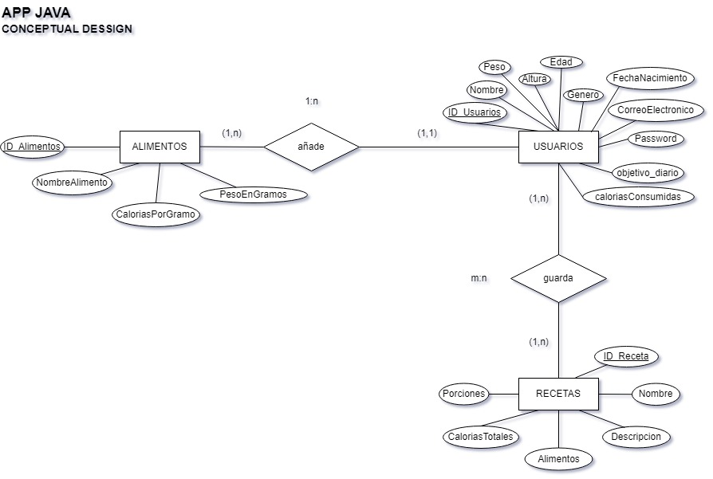

Diseño de Base de Datos
Modelo Conceptual (Diagrama E-R)

Modelo Lógico-Relacional
USUARIOS (ID_Usuarios, Nombre, CorreoElectronico, Password, FechaNacimiento, Peso, Altura, Genero, Edad, objetivo_diario, caloriasConsumidas)
USUARIOS.id_usuarios es clave ajena a ALIMENTOS
ALIMENTOS (ID_Alimentos, NombreAlimento, CaloriasPorGramo, PesoEnGramos, ID_UsuarioAlimento)
RECETAS(ID_Receta, Nombre, Descripcion, Alimentos, Porciones)
RECETAS_USUARIOS (ID_Receta,ID_Usuario)
GUARDA.id_receta es clave ajena a USUARIOS
GUARDA.id_usuarios es clave ajena a RECETAS
Modelo Físico
Código SQL para la Creacion e Insercion en la Base de Datos
### CREACION DE BASE DE DATOS ###
-- Tabla de Usuarios
CREATE TABLE Usuarios (
ID_Usuarios INT AUTO_INCREMENT PRIMARY KEY,
Nombre VARCHAR(50),
CorreoElectronico VARCHAR(100) UNIQUE,
Password VARCHAR(30),
FechaNacimiento DATE,
Peso DECIMAL(5,2),
Altura INT(3),
Genero VARCHAR(9),
Edad INT,
objetivo_diario INT,
caloriasConsumidas INT
);
-- Tabla de Alimentos
CREATE TABLE Alimentos (
ID_Alimentos INT AUTO_INCREMENT PRIMARY KEY,
NombreAlimento VARCHAR(100),
CaloriasPorGramo INT(4),
PesoEnGramos INT(3),
ID_UsuarioAlimento INT,
FOREIGN KEY (ID_UsuarioAlimento) REFERENCES Usuarios(ID_Usuarios)
ON DELETE CASCADE
);
-- Tabla de Recetas
CREATE TABLE Recetas(
ID_Receta INT AUTO_INCREMENT PRIMARY KEY,
Nombre VARCHAR(100),
Descripcion VARCHAR(255),
Alimentos VARCHAR(255),
Porciones INT
);
-- Tabla Relacion Recetas Usuarios
CREATE TABLE Recetas_Usuarios(
ID_Receta INT,
ID_Usuario INT,
PRIMARY KEY (ID_Receta, ID_Usuario),
FOREIGN KEY (ID_Receta) REFERENCES Recetas(ID_Receta),
FOREIGN KEY (ID_Usuario) REFERENCES Usuarios(ID_Usuarios)
ON DELETE CASCADE
);
### INSERCION DE LAS RECETAS EN LA BD ###
INSERT INTO Recetas (Nombre, Descripcion, Alimentos, CaloriasTotales, Porciones)
VALUES
('Ensalada César', 'Ensalada con pollo y aderezo César', 'Lechuga, Pollo, Aderezo César', 300, 2),
('Spaghetti Carbonara', 'Spaghetti con salsa carbonara', 'Spaghetti, Huevos, Tocino, Queso', 600, 4),
('Pizza Margherita', 'Pizza con queso y tomate', 'Masa de pizza, Queso, Tomate', 700, 8),
('Tortilla de Patatas', 'Tortilla tradicional con patatas y huevos', 'Patatas, Huevos, Cebolla', 400, 4),
('Macarrones con Salsa de Tomate', 'Macarrones con salsa de tomate', 'Macarrones, Tomate, Queso', 450, 4),
('Kebab de Pollo', 'Kebab con pollo y vegetales', 'Pollo, Tomate, Lechuga, Cebolla', 550, 2),
('Chili con Carne', 'Plato picante con carne y frijoles', 'Carne de res, Frijoles, Tomate, Chile', 600, 6),
('Sopa de Calabaza', 'Sopa cremosa de calabaza', 'Calabaza, Cebolla, Nata', 200, 4),
('Burritos de Ternera', 'Burritos rellenos de ternera y vegetales', 'Ternera, Tortillas de maíz, Lechuga', 650, 4),
('Tacos de Pescado', 'Tacos con pescado y vegetales', 'Pescado, Tortillas de maíz, Tomate, Cebolla', 350, 2),
('Curry de Pollo', 'Curry suave con pollo y arroz', 'Pollo, Arroz, Leche de coco, Curry', 500, 4),
('Sushi Maki', 'Sushi con salmón y arroz', 'Arroz, Salmón, Algas', 300, 6),
('Hamburguesa Clásica', 'Hamburguesa con carne de res', 'Carne de res, Pan de hamburguesa, Queso, Tomate', 800, 4);